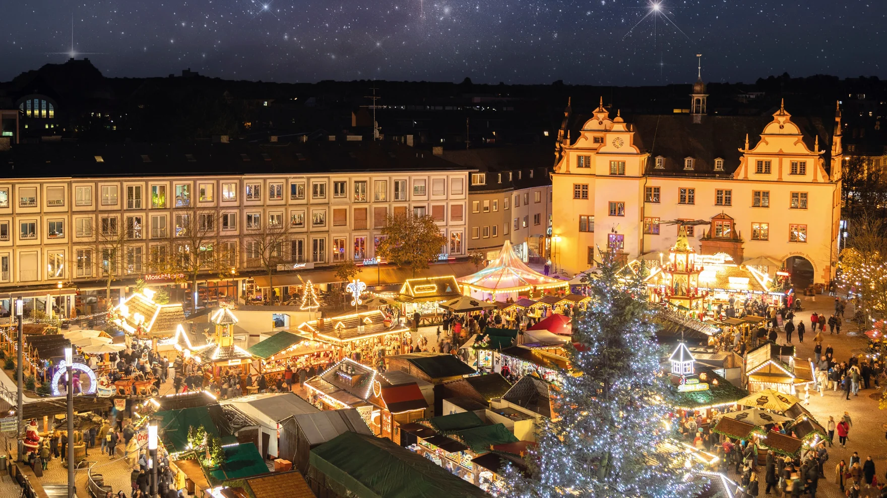
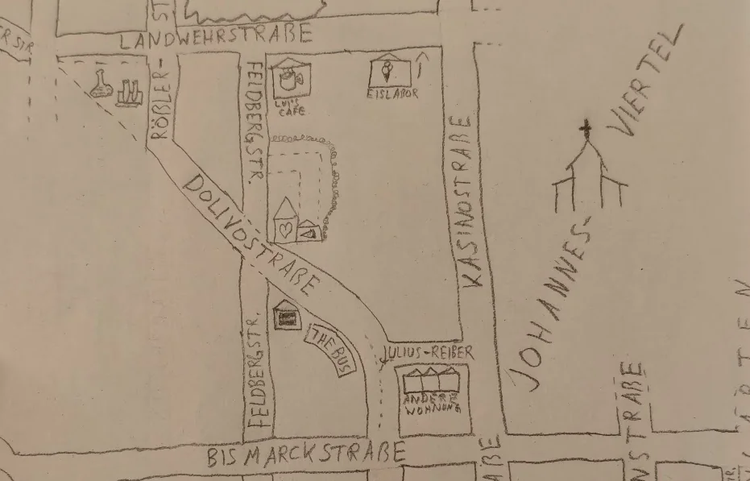
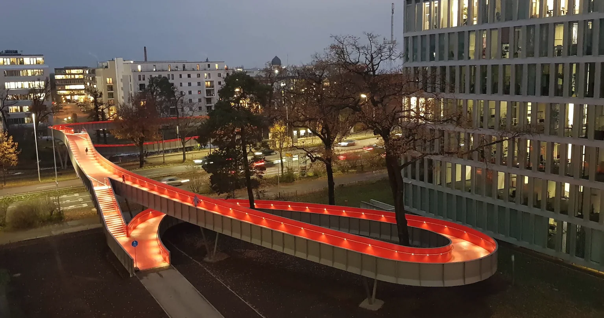
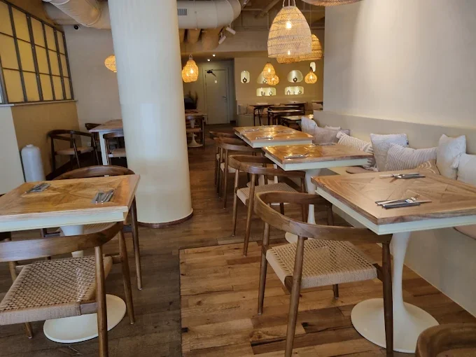
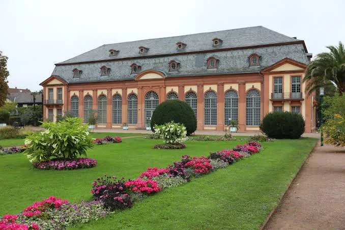
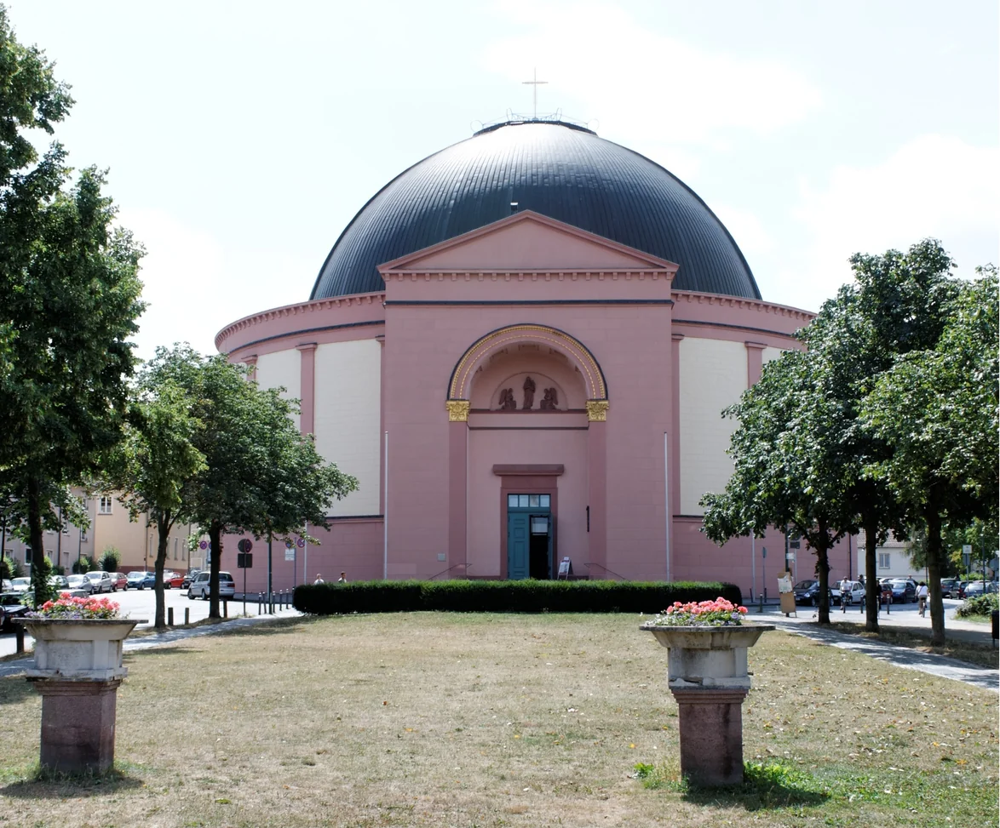
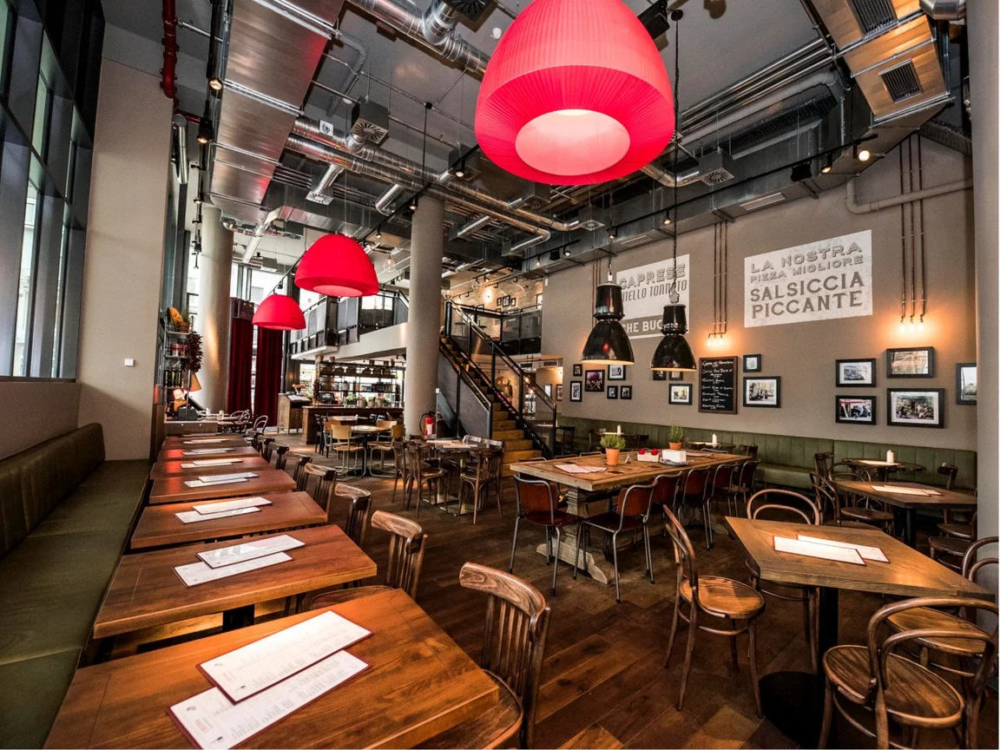

Beide Autos rollen an, Koffer ins ipartment, dann geht's zu uns: Wohnung ansehen, Kaffee und Kuchen.
Kleiner Spaziergang durchs Viertel, eine erste Runde Gesellschaftsspiele oder einfach zusammensitzen und plaudern.

Treffen um 9:00 bzw. 9:30 am Apartment. Von dort sind es nur wenige Minuten zur Tram-Haltestelle.
Auf dem Weg zur Haltestelle laufen wir über eine sehr coole Radbrücke! Mit der Tram geht's dann in die Innenstadt.


Frühstückscafe direkt in der Innenstadt mit viel Platz für uns und Charlie!
Lizanne und ich müssen um 14:30 zum Einsingen. Bis zum Konzertbeginn habt ihr frei, hier ein paar Ideen:

Sängerinnen und Sänger aller Altersstufen gestalten ein buntes Programm mit Advents- und Weihnachtsliedern aus aller Welt.

Tisch ist reserviert, das Restaurant ist nur 100 Meter von der Kuppelkirche entfernt.

Falls es zeitlich passt, laufen wir über den schönen Darmstädter Weihnachtsmarkt!
Rückweg zur Wohnung: Wer möchte, lässt den Tag bei Gesellschaftsspielen und Kakao ausklingen. Wer müde ist, hüpft direkt ins Hotelbett.
Entspanntes Zusammenkommen in unserer Wohnung: Ofenfrische Brötchen mit veganer Aufschnittauswahl und selbstgemachtem Hummus.
Abreise beider Autos, sobald es für alle passt.